Advanced Frontend Debugging
About me

- Member of the Firefox Developer Tools team
- Mainly working on the JS debugger and perf tools
- Worked with JavaScript, Java, C/C++, Perl and more in 15+ yrs (seen lots of tools)
Agenda
- The case for tools
- JavaScript Debugging
- CPU Profiling
- Minimizing engine work
- Execution Tracing
- Micro-optimizations
- Debugging mobile apps
- Extending your tools
HTML5 & Tools
“I think the biggest mistake that we made, as a company, is betting too much on HTML5”
-- Mark Zuckerberg, Facebook CEO
“The biggest issue for HTML5 is the maturity of tools.”
-- Robert Shilston, FT Labs Director
The case for tools
- JS has been around forever
- People learned to code and debug using alert()
- With better tools we can create more robust and more complex programs
- A modern platform is not viable without great tool support
JavaScript Debugging
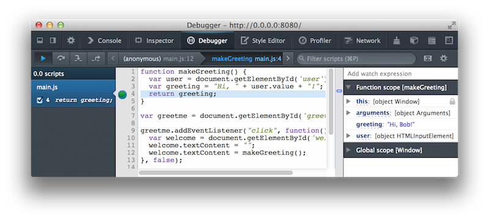JavaScript Debugging (cont.)
- Call stack visualization
- foo(bar(baz())) => foo > bar > baz
- Stack traces show the future, not the past
- Variable inspection
- Closure inspection
JavaScript Debugging (cont.)
- Conditional breakpoints
- Error breakpoints
- Event breakpoints
- Watch expressions
- Console inspection
Working with frameworks
- Unminifying/pretty-printing
- Source maps (inspector, visualization)
- Black-boxing
CPU Profiling
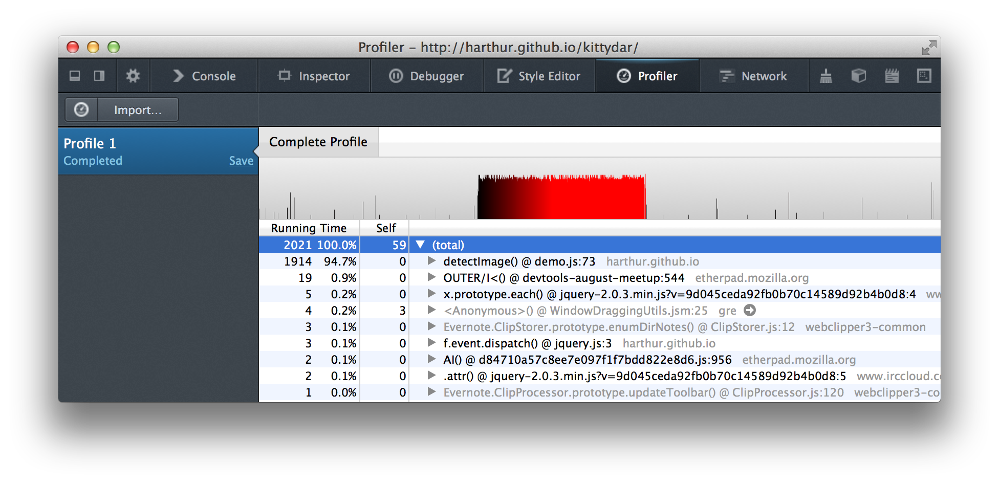CPU Profiling (cont.)
- console.profile/profileEnd
- Concentrate on the hot spots
- Observe self time vs. other time
- Identify jank
- Enable platform profiling for further insights
CPU Profiling (cont.)
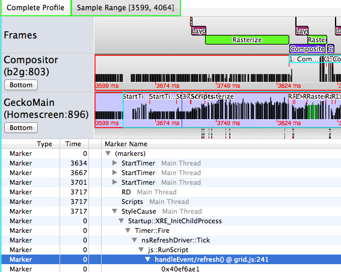Exposing the rendering engine behavior
Minimizing engine work
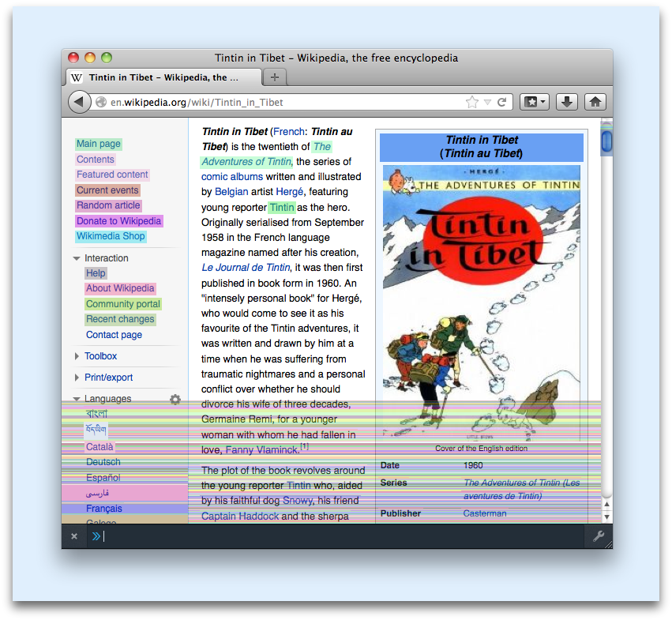Paintflashing
Minimizing engine work (cont.)
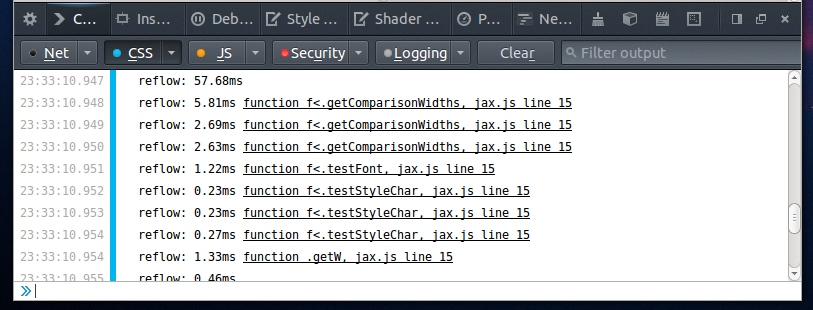- Reflow events
- Frame rate visualization
- Set layers.acceleration.draw-fps: true
Minimizing engine work (cont.)
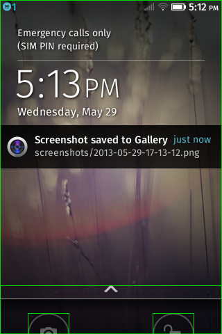
- Layer border painting
- Set layers.draw-borders: true
Optimizing JS objects
- Keep object shapes static
- delete obj.prop; // bad
- obj.prop = undefined; // good
- obj.prop = null; // good
- Cautiously consider Object.freeze
Memory Profiling
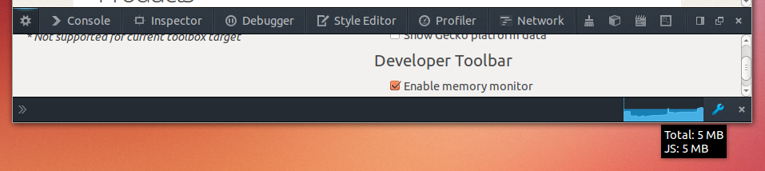Memory monitor
Execution Tracing
- Tracing profiler or tracing debugger
- Observe runtime code paths
- Reason about program behavior
- Understand how 3rd-party code works
- Unsuitable for performance profiling due to overhead
Execution Tracing (cont.)
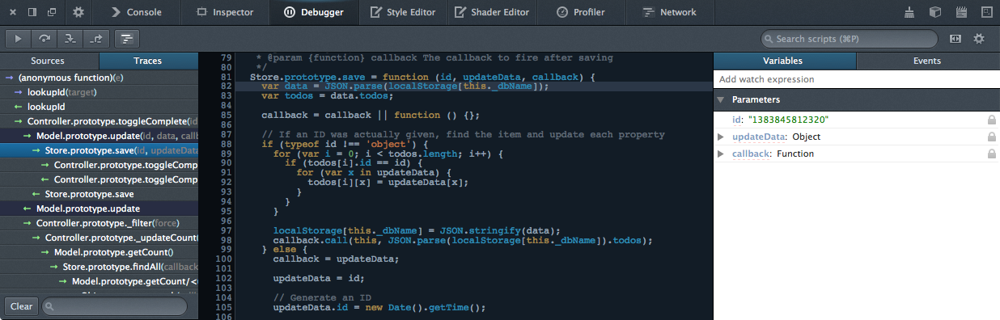Old-School Debugging
0 (anonymous) foo.js:100
1 (anonymous) foo.js:45
2 (anonymous) bar.js:12
3 (anonymous) baz.js:123
4 main baz.js:44
- "Always use named functions"
- "Some frameworks and tools understand fn.displayName"
Engines can infer function names
Anonymous functions no longer need to be named for debugging
function f() {} // display name: f (the given name)
var g = function () {}; // display name: g
o.p = function () {}; // display name: o.p
var q = {
r: function () {} // display name: q.r
};
function h() {
var i = function() {}; // display name: h/i
f(function () {}); // display name: h/<
}
var s = f(function () {}); // display name: s<
Modern Debugging
0 f< foo.js:100
1 foo/< foo.js:45
2 bar/helper bar.js:12
3 bar.do baz.js:123
4 main baz.js:44
- "Never use named functions"
- "Don't bother with fn.displayName"
Debugging mobile apps
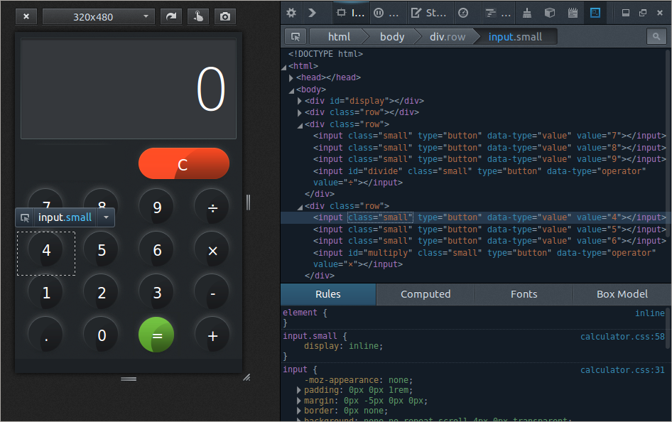- Responsive Design: test layout behavior in different screen sizes
Debugging mobile apps (cont.)
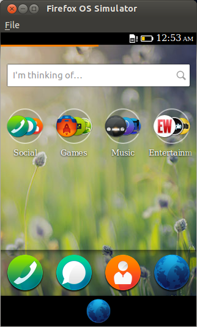- Simulators: debug issues related to APIs unavailable on desktop
Debugging mobile apps (cont.)
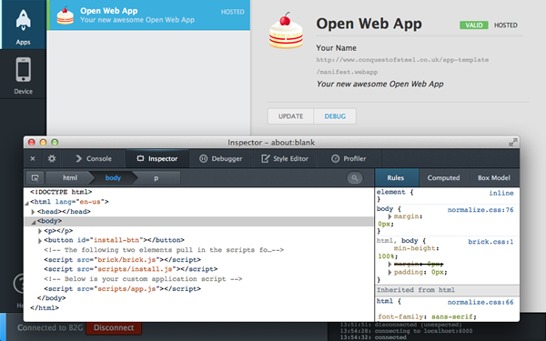- Remote debugging: diagnose problems that only manifest themselves in the real thing
Extending your tools
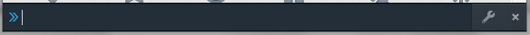GCLI commands (docs)
gcli.addCommand({
name: 'countdivs',
exec: function(args, context) {
return context.environment.document.querySelectorAll('div').length;
}
}); Extending your tools (cont.)
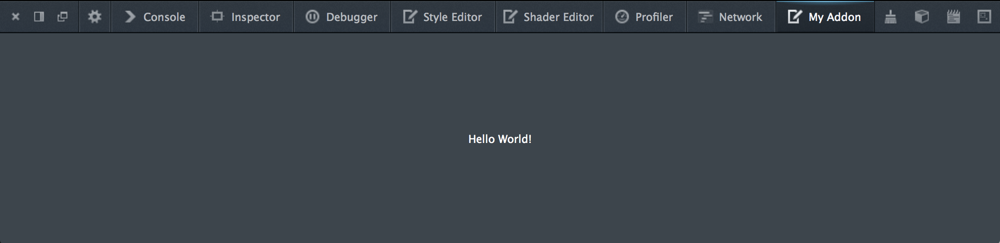- Add-ons (template)
- Browser debugging
Thank You
- Questions, feedback:
- @pastith on Twitter
- pastith @GMail
- Homework:
- Slides: astithas.com/talks/qconsf2013/
- Firefox Developer Tools: developer.mozilla.org/docs/Tools
- Get involved!